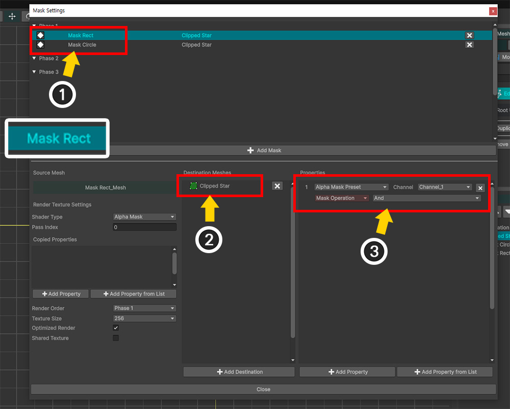
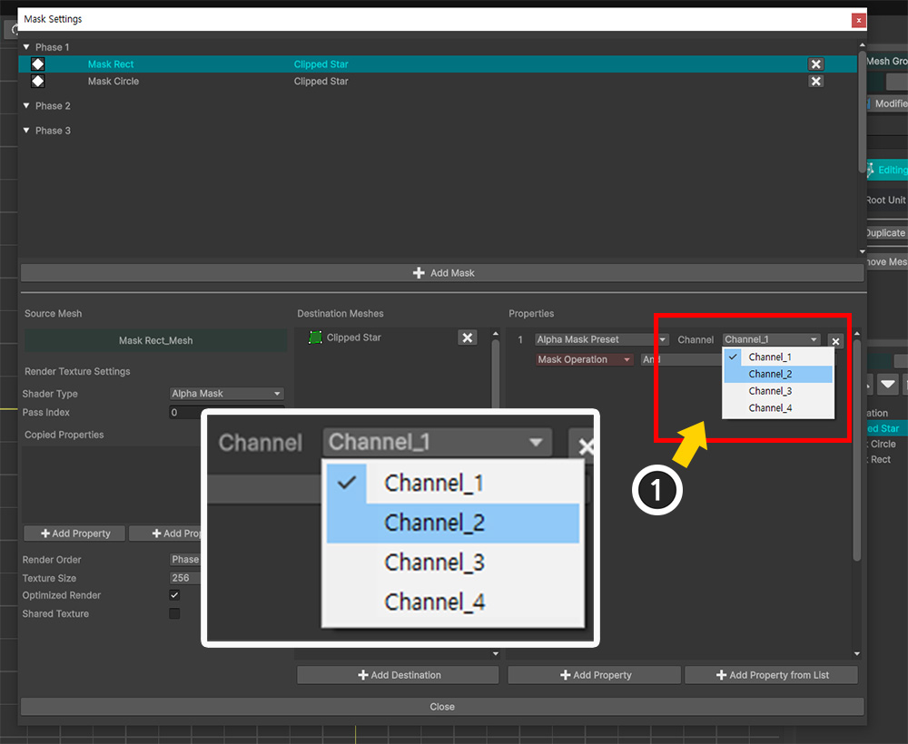
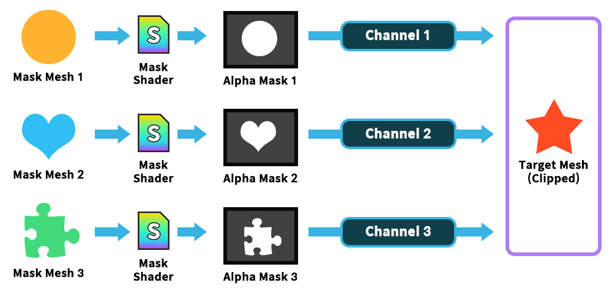
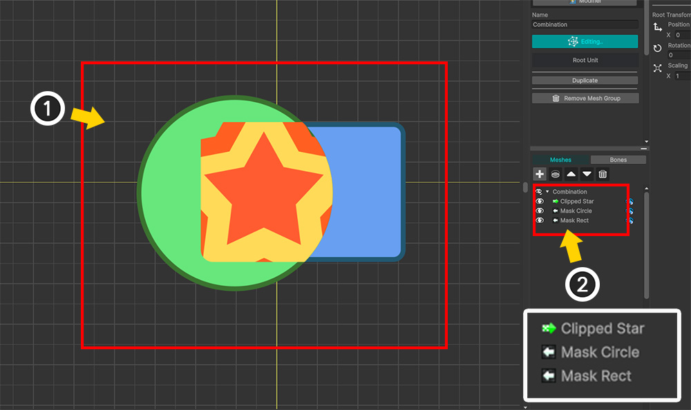
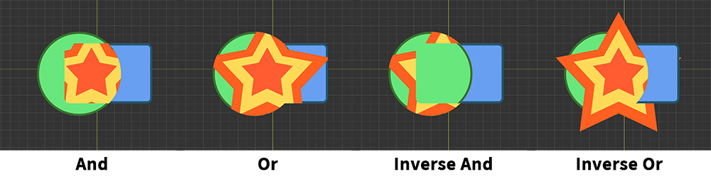

AnyPortrait > マニュアル > マスクの組み合わせ
マスクの組み合わせ
1.6.0
「AnyPortrait v1.6.0」で改善された「マスク」を使用すると、1つの「クリッピングマスク」と4つの「チャンネル別アルファマスク」を組み合わせてクリッピングレンダリングに適用できます。
特に、「アルファマスク」を組み合わせて適用する際の演算方式をオプションとして設定できます。
このページでは、複数のマスクをクリッピングメッシュに渡して組み合わせる方法について説明します。
メモ
「マスク」について、次のマニュアルをまず読んでみることをお勧めします。
このページで扱う内容と同様の動作をする「共有テクスチャ（Shared Texture）」も、次のマニュアルで確認できます。
- マスク

2つのマスクメッシュ（「Mask Circle」、「Mask Rect」）とクリッピングされる1つのメッシュ（「Clipped Star」）があります。
2つのマスクを作成して1つのメッシュに同時に適用しましょう。

「マスク設定ダイアログ」を開き、マスクを設定しましょう。
(1) 最初のマスクメッシュ（「Mask Circle」）の「マスクデータ」を作成します。
(2) マスクを受ける「対象メッシュ」（「Clipped Star」）を登録します。
(3) 「Alpha Mask Preset」タイプのプロパティを登録します。
ここでは、「Channel」の値を「Channel_1」に設定し、「Mask Operation」を「And」に設定します。

(1) 2番目のマスクメッシュ（「Mask Rect」）の「マスクデータ」を作成します。
(2) 以前と同じメッシュ（「Clipped Star」）をクリッピング先として登録します。
(3) 「Alpha Mask Preset」タイプのプロパティを登録します。

2つのマスクが同じメッシュをターゲットにしている場合は、各マスクが異なるプロパティに入力されるようにする必要があります。
「Alpha Mask Preset」の場合は、これを「Channel」で区切ります。
(1) 2 番目のマスクデータのプロパティで「Channel」の値を「Channel_2」に変更します。

「Alpha Mask Preset」は、「Channel」単位でプロパティを区切ってマスクデータを渡します。
この特性のおかげで、2つ以上のマスクメッシュが同じメッシュを対象にクリッピングを行うことが可能です。
クリッピング演算シーケンスは既存の「クリッピングマスク」が最初に演算され、「アルファマスク」は「Channel 1」から順に演算になります。

(1) 「マスク設定ダイアログ」を閉じると、2つのクリッピングマスクが1つのメッシュ（「Clipped Star」）に適用されていることがわかります。
(2) 右側の「Hierarchy UI」から、メッシュのアイコンから2つのマスクが1つのメッシュに渡されることがわかります。
現在は2つのマスクメッシュの「共通領域」でクリッピングになっているのがわかります。
これは、「アルファマスク」の演算方式値が「And」に設定されているためである。
演算方式を変更したら、マスクの組み合わせ結果がどのように変わるかを確認しましょう。

(1) 「Channel_2」に送信される「Mask Rect」メッシュの「マスクデータ」を選択します。
(2) 「Mask Operation」の値を一つずつ変更しながら結果を比較しましょう。

演算方式によってクリッピングマスクの組み合わせ結果が異なることがわかる。
- And : 前のチャンネルのマスクと共通の領域にクリッピングします。
- Or : 前のチャンネルのマスクと現在のマスクを加えた領域全体にクリッピングします。
- Inverse And : アルファマスクを反転した値で「And」演算を行います。
- Inverse Or : アルファマスクを反転した値で「Or」演算を行います。
メモ
マスクの組み合わせの結果は、チャネルによるマスク操作の順序の影響を受けます。